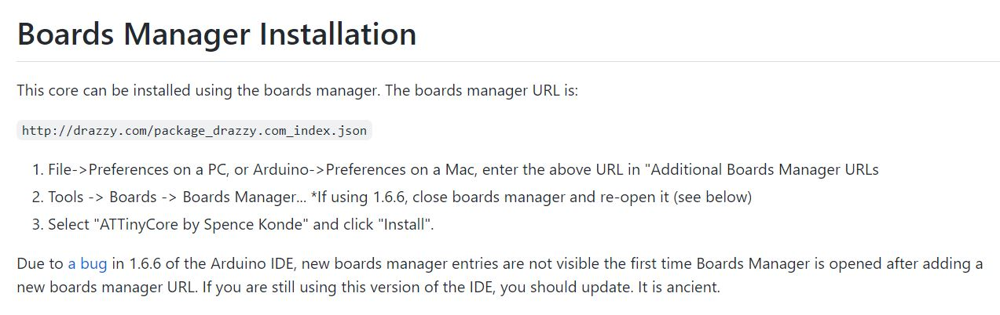
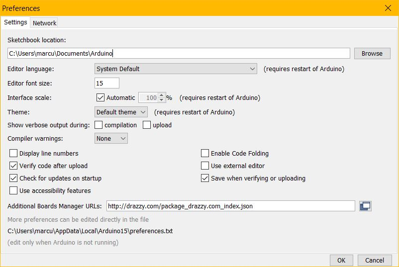
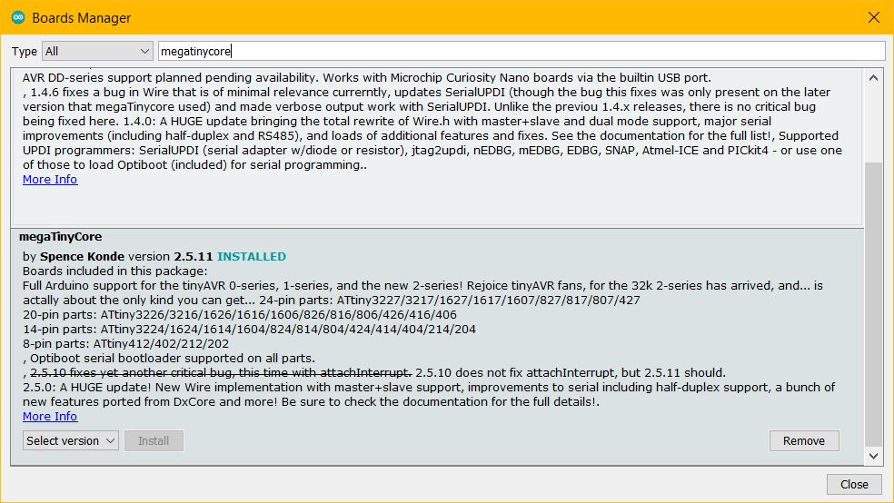
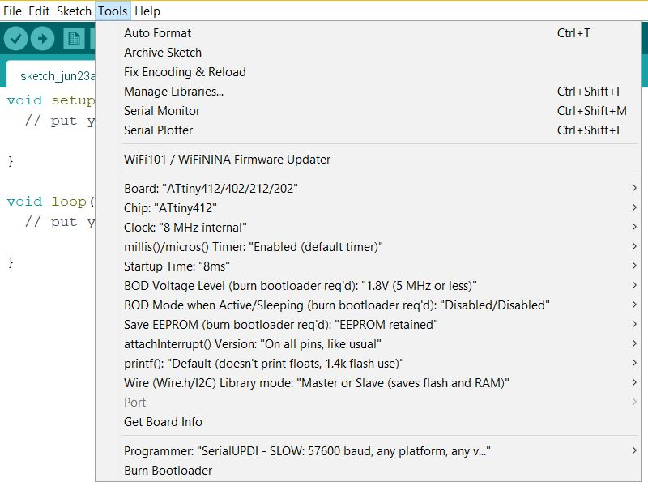
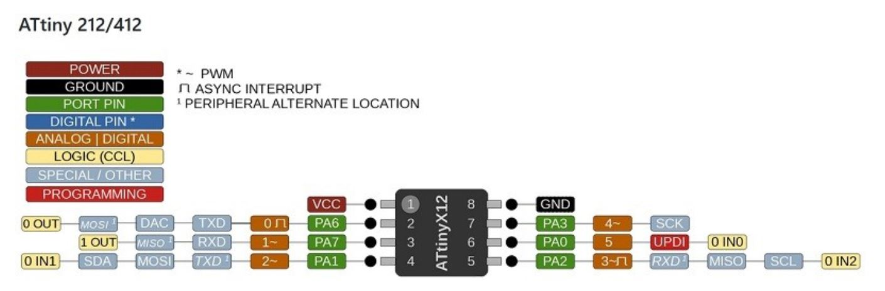
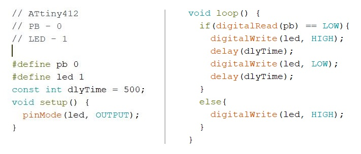

Embedded Programming
Programming the ATtiny412
| Installing cores to make the microcontroller compatible with the Arduino Software (IDE). Go to SpenceKonde's repository at github > Installation > copy the URL "http://drazzy.com/package_drazzy.com_index.json". |  |
| Paste the URL under Preference > Additional Board Manager URLs in the Arduino IDE. |  |
| In Boards Manager, search megaTinyCore and install core by SpenceKonde. |  |
| In Tools > Board > megaTinyCore > "ATtiny412/402/212/202" Clock > 8 MHz internal Programmer > SerialUPDI - SLOW |
 |
| When programming, refer to the pin out diagram to find out which arduino pin the push button and LED is connected to. I programmed the following code such that the LED will flash whenever the push button is pressed. |   |
 |
 |